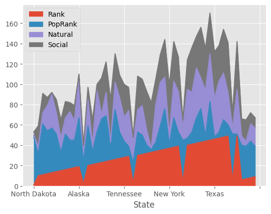

US State Ranking
Contents
26. US State Ranking#
http://www.businessinsider.com/us-news-best-states-quality-of-life-ranked-2018-2
https://en.wikipedia.org/wiki/List_of_U.S._states_and_territories_by_population
import numpy as np
import pandas as pd
import matplotlib.pyplot as plt
from pandas.plotting import scatter_matrix
plt.style.use('ggplot')
mcdfraw = pd.read_csv("businessinsider.csv")
popdfraw = pd.read_csv("population.csv")
mc_temp = []
mc_rank = []
mc_state = []
mc_state_natural = []
mc_state_social = []
for elem in mcdfraw['State']:
mc_temp.append(elem.split(". "))
mc_rank = np.transpose(mc_temp)[0]
mc_rank = [int(elem) for elem in mc_rank]
mc_state = np.transpose(mc_temp)[1]
mc_temp = []
for elem in mcdfraw['Natural']:
mc_temp.append(elem.split(": "))
mc_state_natural = np.transpose(mc_temp)[1]
mc_state_natural = [int(elem) for elem in mc_state_natural]
mc_temp = []
for elem in mcdfraw['Social']:
mc_temp.append(elem.split(": "))
mc_state_social = np.transpose(mc_temp)[1]
mc_state_social = [int(elem) for elem in mc_state_social]
pop_temp = []
for elem in popdfraw['State']:
pop_temp.append(elem.strip())
popdfraw['State'] = pop_temp
for elem in popdfraw['State']:
popdfraw['State'].replace([elem], elem.strip())
mcdf_dict = {"State": mc_state, "Rank": mc_rank, "Natural": mc_state_natural, "Social": mc_state_social}
mcdf = pd.DataFrame(data=mcdf_dict)
mcdf = mcdf.set_index('State')
popdf = popdfraw.set_index('State')
popdf[popdf['PopRank']==47].index
Index(['North Dakota'], dtype='object', name='State')
df = pd.concat([mcdf,popdf], axis=1)
df.sort_values(by=['Rank'])
| Rank | Natural | Social | PopRank | Population2017 | HouseSeats | PerHouseSeat | Percent | |
|---|---|---|---|---|---|---|---|---|
| State | ||||||||
| North Dakota | 1 | 2 | 3 | 47 | 755393 | 1 | 755393 | 0.0024 |
| Minnesota | 2 | 12 | 4 | 22 | 5576606 | 8 | 697076 | 0.0171 |
| Wisconsin | 3 | 20 | 5 | 20 | 5795483 | 8 | 724435 | 0.0179 |
| New Hampshire | 4 | 13 | 7 | 41 | 1342795 | 2 | 671398 | 0.0041 |
| South Dakota | 5 | 6 | 14 | 46 | 869666 | 1 | 869666 | 0.0027 |
| Mississippi | 6 | 9 | 17 | 34 | 2984100 | 4 | 746025 | 0.0092 |
| Arkansas | 7 | 5 | 21 | 32 | 3004279 | 4 | 751070 | 0.0093 |
| New Mexico | 8 | 17 | 11 | 36 | 2088070 | 3 | 696023 | 0.0064 |
| Iowa | 9 | 18 | 10 | 30 | 3145711 | 4 | 786428 | 0.0097 |
| Colorado | 10 | 8 | 20 | 21 | 5607154 | 7 | 801022 | 0.0172 |
| Wyoming | 11 | 11 | 19 | 50 | 579315 | 1 | 579315 | 0.0018 |
| Maine | 12 | 25 | 8 | 42 | 1335907 | 2 | 667954 | 0.0041 |
| Montana | 13 | 33 | 2 | 44 | 1050493 | 1 | 1050493 | 0.0032 |
| Nebraska | 14 | 21 | 13 | 37 | 1920076 | 3 | 640025 | 0.0059 |
| Missouri | 15 | 14 | 18 | 18 | 6113532 | 8 | 764192 | 0.0189 |
| Kansas | 16 | 16 | 16 | 35 | 2913123 | 4 | 728281 | 0.0090 |
| Oklahoma | 17 | 28 | 9 | 28 | 3930864 | 5 | 786173 | 0.0121 |
| Oregon | 18 | 19 | 15 | 27 | 4142776 | 5 | 828555 | 0.0127 |
| Alaska | 19 | 42 | 1 | 48 | 739795 | 1 | 739795 | 0.0023 |
| Idaho | 20 | 26 | 12 | 39 | 1716943 | 2 | 858472 | 0.0052 |
| Washington | 21 | 7 | 24 | 13 | 7405743 | 10 | 740574 | 0.0226 |
| Utah | 22 | 41 | 6 | 31 | 3101833 | 4 | 775458 | 0.0095 |
| Rhode Island | 23 | 4 | 36 | 43 | 1059639 | 2 | 529820 | 0.0033 |
| Delaware | 24 | 23 | 30 | 45 | 961939 | 1 | 961939 | 0.0030 |
| Massachusetts | 25 | 3 | 42 | 15 | 6859819 | 9 | 762202 | 0.0211 |
| Vermont | 26 | 27 | 28 | 49 | 623657 | 1 | 623657 | 0.0019 |
| Kentucky | 27 | 34 | 22 | 26 | 4454189 | 6 | 742365 | 0.0137 |
| Tennessee | 28 | 24 | 32 | 16 | 6715984 | 9 | 746220 | 0.0206 |
| Michigan | 29 | 35 | 23 | 10 | 9962311 | 14 | 711594 | 0.0307 |
| South Carolina | 30 | 22 | 33 | 23 | 5024369 | 7 | 717767 | 0.0154 |
| Maryland | 31 | 29 | 26 | 19 | 6052177 | 8 | 756522 | 0.0186 |
| Georgia | 32 | 15 | 38 | 8 | 10429379 | 14 | 744956 | 0.0319 |
| Florida | 33 | 1 | 45 | 3 | 20984400 | 27 | 777200 | 0.0638 |
| North Carolina | 34 | 37 | 25 | 9 | 10273419 | 13 | 790263 | 0.0314 |
| Alabama | 35 | 43 | 27 | 24 | 4874747 | 7 | 696392 | 0.0151 |
| Hawaii | 36 | 31 | 37 | 40 | 1427538 | 2 | 713769 | 0.0044 |
| New York | 37 | 10 | 48 | 4 | 19849399 | 27 | 735163 | 0.0611 |
| Connecticut | 38 | 36 | 39 | 29 | 3588184 | 5 | 717637 | 0.0111 |
| Arizona | 39 | 40 | 34 | 14 | 7016270 | 9 | 779586 | 0.0215 |
| Ohio | 40 | 48 | 29 | 7 | 11658609 | 16 | 728663 | 0.0359 |
| Virginia | 41 | 39 | 44 | 12 | 8470020 | 11 | 770002 | 0.0260 |
| Louisiana | 42 | 49 | 31 | 25 | 4684333 | 6 | 780722 | 0.0145 |
| Nevada | 43 | 30 | 50 | 33 | 2998039 | 4 | 749510 | 0.0092 |
| Pennsylvania | 44 | 45 | 41 | 5 | 12805537 | 18 | 711419 | 0.0396 |
| West Virginia | 45 | 47 | 40 | 38 | 1815857 | 3 | 605285 | 0.0056 |
| Texas | 46 | 38 | 46 | 2 | 28304596 | 36 | 786238 | 0.0862 |
| Illinois | 47 | 50 | 35 | 6 | 12802023 | 18 | 711224 | 0.0396 |
| Indiana | 48 | 46 | 43 | 17 | 6666818 | 9 | 740758 | 0.0205 |
| New Jersey | 49 | 32 | 49 | 11 | 9005644 | 12 | 750470 | 0.0277 |
| California | 50 | 44 | 47 | 1 | 39536653 | 53 | 745974 | 0.1214 |
26.1. Visualization#
df[['Rank','PopRank','Natural','Social']].plot.area();

plt.figure(figsize=(17,15))
plt.scatter(x=df['Rank'], y=df.index.values, s=df['PopRank']*10);
plt.xlabel("Mckinsey Rank")
plt.show()